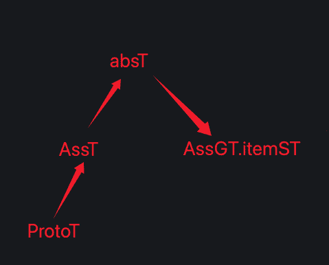

AI系列之《2025.09-11：组特征独立模块与 GT 通路简化》

来源：HELIX_THEORY/手稿/assets/790_特征识别层级通路.png

来源：HELIX_THEORY/手稿/assets/789_GT识别结果仍不准确问题.png
来源：Note35.md
9 到 11 月，组特征改回独立网络模块，并测试独立模块的组特征与特征演化竞争浮现。随后，GT 识别 ref 通路被简化。
组特征独立化，说明它不适合只作为其他结构的附属逻辑。独立模块可以让组特征拥有自己的识别、竞争和演化过程。
GT 通路简化则是为后续准确度优化铺路。视觉系统如果通路太复杂，错误来源会变得难以追踪；简化 ref 通路后，才能更清楚地比较 ST、GT、GV 等层级的贡献。